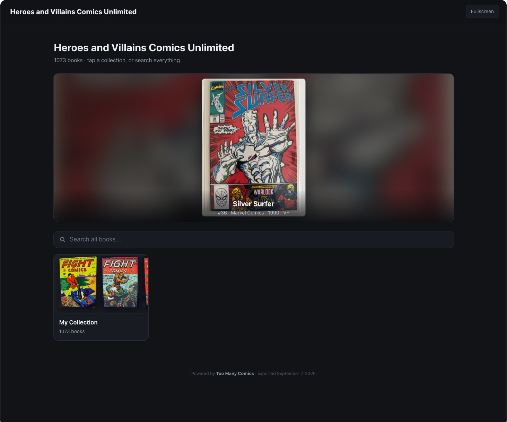
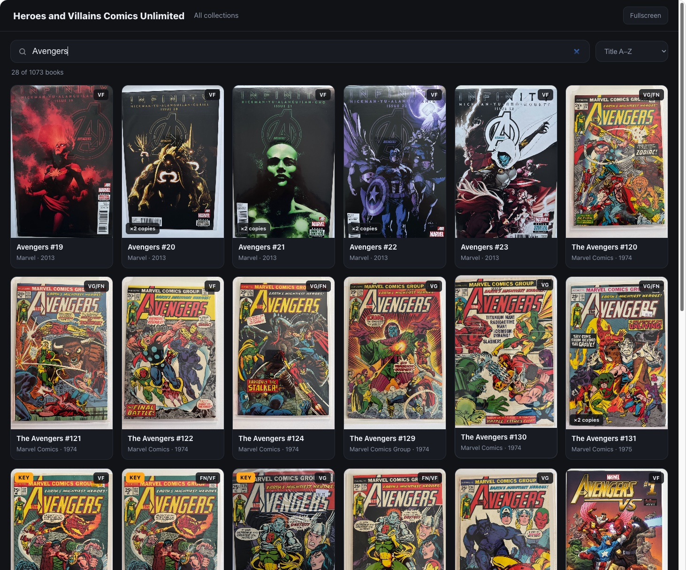
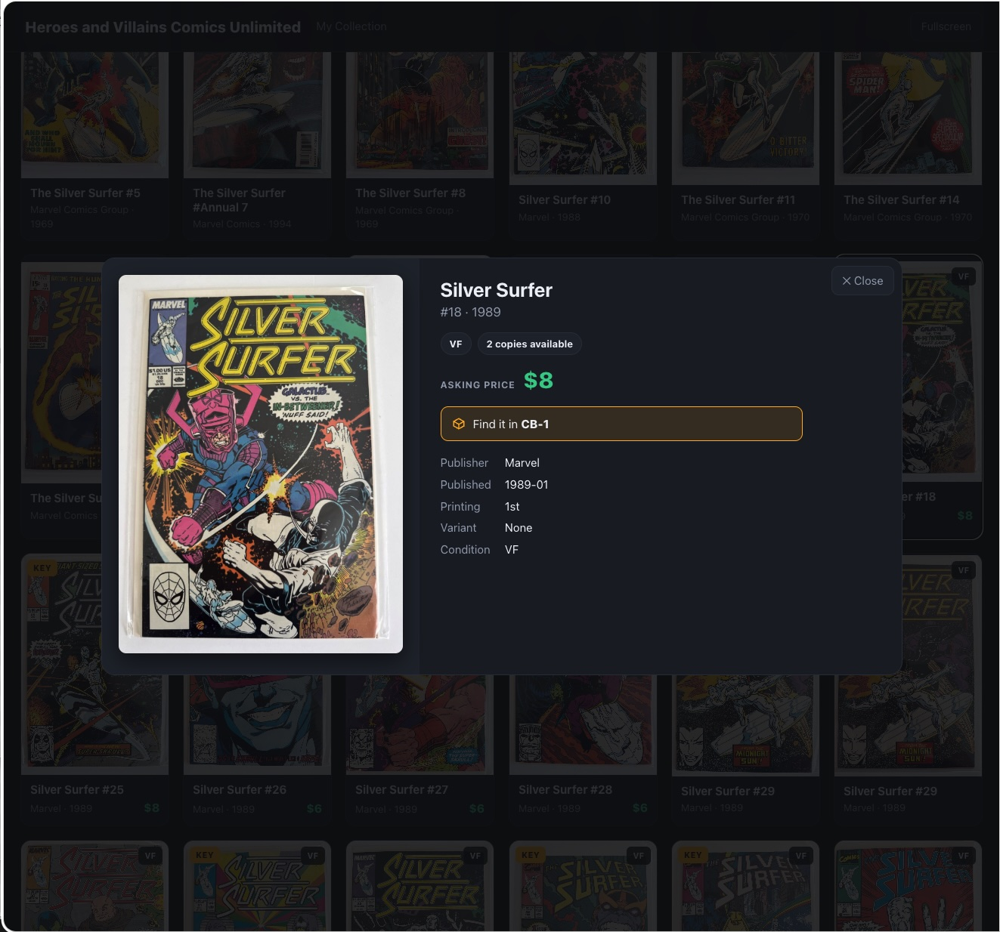

The convention table
Your table becomes a mobile comic book store
I spent the 90s at comic conventions, on both sides of the table. Not much has changed since: the wall of comics, the boxes and boxes of books to dig through. It's exciting for the first hour. Then it's a line of strangers thumbing through your well-cared-for books, and every flip of a bagged book is a small gamble with its condition.
Too Many Comics generates a kiosk from my inventory: a self-contained, searchable website of my show stock. Put it on a laptop, or better, on a big touchscreen at the end of the table, and the booth becomes a mobile comic book store. Buyers search by title, issue, publisher, or creator, see every cover big, and come to me when they have found something. It runs with no internet at all, which matters, because convention hall Wi-Fi is a rumor.

I can also post my show inventory for attendees to pull into their own Too Many Comics app. Now they browse my stock on their own phone, from across the hall or from the hotel that night, asking prices included.
And the kiosk answers two different questions, not one. The show inventory answers "what do you have with you?" But I can publish my whole store collection too, so a buyer who strikes out in the boxes on the table can still find the book back at the shop and we can arrange it. The stock at the table stops being the limit of what I can sell that weekend.

That last part quietly kills my least favorite chore. No price stickers. No re-stickering the whole box when the market moves or I decide to run a show special. Prices live in one place, I change them once, and every screen showing my stock catches up at the same moment. Nobody rummages, the books stay in their bags, and I stay in the conversation that actually matters: the sale.

Here's how that plays out when the boxes get ahead of the screen. Late in the day, a customer at the kiosk waves me over: “Can I look at this Silver Surfer #18?” Every card on the kiosk carries its copy's label code, the same QR that's on the bag, so I point Scan a Stack at the screen, and the app gives me the one answer a static display never could: that copy is gone. Sold, somewhere in the weekend's blur; one tap recorded it even if my memory didn't. So I can say something better than “let me go dig”: “That one seems to have sold, but let me check something.”
Because earlier today a stack came across the table the other way, and I bought it. Those books entered my inventory the moment we shook hands, photographed and graded by Evaluate a stack. I search, and there it is: another Silver Surfer #18, similar condition, sitting in the buy box behind my chair. “Let me get another copy of that book for you.” While I'm digging it out, the app answers my two private questions: what the sold copy went for, and what I paid for this one at eleven o'clock this morning. By the time I'm back at the table I can hand over the book with the sentence that closes the deal: “Very similar grade, and I'd sell it for the same asking price.” The customer looks it over and buys it.
That exchange is the whole architecture in one sale. The kiosk is a snapshot: static files, no internet, exactly as current as the moment I exported it. That is precisely what lets it run all weekend on convention Wi-Fi that doesn't exist. The phone is the live inventory: it knows what sold an hour ago and what I bought this morning. The kiosk pulls buyers in and lets them browse without touching the boxes; the phone tells me the truth about what's still here; and crossing between the two takes one scan of a code on the screen. A book that had already sold didn't cost me the sale, and a book I bought at eleven was earning by mid-afternoon. That's the optimization: not more stock, just never losing a buyer to stale information.
Behind it: the kiosk export is generated by the app: static files, works offline, updates by dropping in a new export. Every card carries its copy's label QR, the same code as the sticker on the bag, so a phone can scan a book straight off the kiosk screen and ask the live inventory whether it is still here. Phone to phone sharing rides AirDrop and the app's own share format. Your full collection stays private; you choose what goes in the show inventory and which fields ride along.